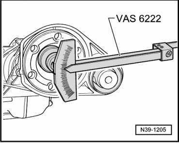
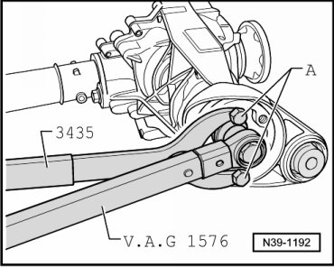
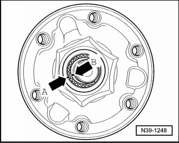
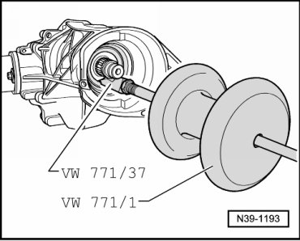
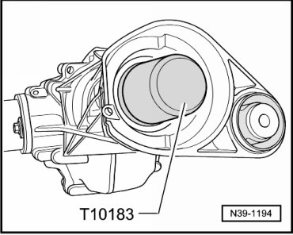
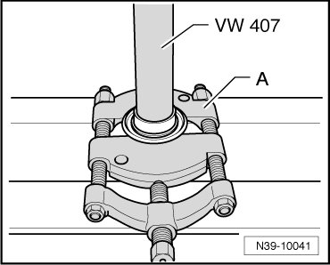
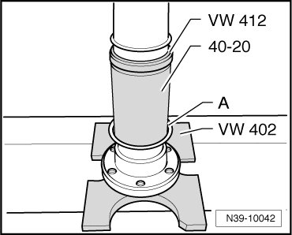

Front Final Drive
Driveshaft Flange Seal, with Final Drive Removed
Special tools, testers and auxiliary items required
• Pressure plate (VW 402)
• Punch (VW 407)
• Punch (VW 412)
• Slide hammer (VW 771)
• Pulling hook (771/37)
• Seal driver-front wheel bearing (40 - 20)
• Retainer (3435)
• Torque wrench (VAG 1576)
• Friction meter (VAS 6222)
• Thrust piece (T10183)
• Kukko 17/2 separating device
• Sealing grease (G 052 128 A1)
• Loctite (648)
• 2 M10 X 25 bolts
Removing
- Remove front final drive. Refer to --> [ Front Final Drive ] Front Final Drive.
- Lay front final drive on a workbench.
- Before loosening drive pinion nut, measure friction torque.

- Take note of this value. After the seal is replaced, friction torque must be restored to this value.
Use friction meter (VAS 6222).
- Remove nut for driveshaft flange.

A 2 M10 x 25 bolts
When loosening the nut of the driveshaft flange, counter hold using counter holder (3435) (2nd technician).
- Mark installation position of driveshaft flange - arrow A - relative to drive pinion - arrow B -.

- Remove the driveshaft flange. Use a slide hammer (VW 771) if it is difficult.
- Pull out sealing ring.

- Clean the threads for the nut on the drive pinion.
Installing
- Drive new seal in until seated; be sure not to distort seal.

- Fill area between sealing lip and dust lip halfway with sealing grease (G 052 128 A1).
Before installing driveshaft flange, check the dust cap for damage. Replace the dust cap if necessary.
- Install driveshaft flange, being aware of the marking from removal.
- Coat threads of new nut with locking fluid Loctite (648).
- Tighten new nut for drive pinion until friction torque measured prior to removal is attained.
A 2 M10 x 25 bolts
When tightening the nut of the driveshaft flange , counter hold using counter holder (3435) (2nd technician).
Increase tightening torque gradually, frequently measuring friction torque. The friction torque measured prior to removal must not be exceeded! Otherwise the front final drive must be replaced!
- Install front final drive. Refer to --> [ Front Final Drive ] Front Final Drive.
- Check gear oil in front final drive. Refer to --> [ Gear Oil Checking ] Gear Oil Checking.
Dust Cap for Driveshaft Flange, Replacing
- Press the dust cap off of the driveshaft flange.

A Separating device 22 to 115 mm, e.g. Kukko 17/2
- Press the dust cap - A - onto driveshaft flange.

Installation position of dust cap: Depression on dust cap faces up toward sleeve (40 - 20).